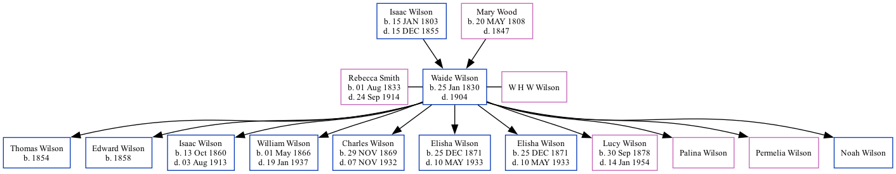

Waide Hampton Wilson 1830 - 1904
[ Home ] | [ Surnames Index ] | [ Family History ]The 3rd of 11 children of Isaac Wilson and Mary Wood, was born in Calloway Co., Mo on Jan 25, 18301,2 and was married twice - to Rebecca Smith (on Apr 4, 1851 in Clinton, Henry County, MO) W H W Wilson (on Apr 4, 1851 in Henry, Missouri)2. He had 11 children with Rebecca Smith: Thomas W, Edward W, Isaac Newton, William Perry, Charles Francis, Elisha Filewood, Elisha, Lucy Amanda, Palina, Permelia and Noah.
During his life, he was living in Galena, Jasper, Missouri, USA in 18801; and in Joplin Ward 5, Jasper, Missouri in 19002.
He died in 1904 in Joplin, Missouri.
Parents
- Isaac D was born on Jan 15, 1803
- Mary E was born on May 20, 1808
Children
- Thomas W was born in 1854
- Edward W was born in 1858
- Isaac Newton was born on Oct 13, 1860
- William Perry was born on May 1, 1866
- Charles Francis was born on Nov 29, 1869
- Elisha Filewood was born on Dec 25, 1871
- Elisha was born on Dec 25, 1871
- Lucy Amanda was born on Sep 30, 1878
Citations
- 1880 United States Federal Census Ancestry.com Operations Inc (Age: 50; Marital Status: Married; Relation to Head of House: Self)
- 1900 United States Federal Census Ancestry.com Operations Inc (Age: 70; Marital Status: Married; Relation to Head of House: Head)
Family Tree
Data (GEDCOM) maintained by Jay Weston Hannah, Omaha, Nebraska, USA.
Website generated by ged2site. Last updated on Jun 18, 2024.